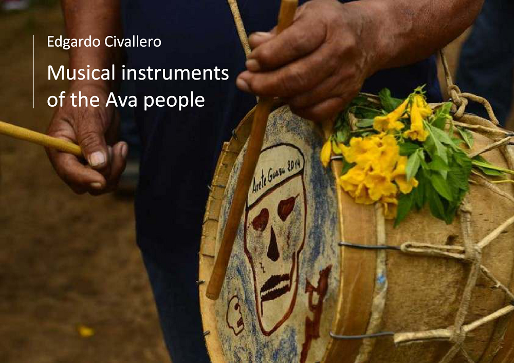

Musical instruments of the Ava people
Home > Digital books on music. Series 1 > Musical instruments of the Ava people
How to cite this work: Civallero, Edgardo (2025). Musical instruments of the Ava people. Archive edition. Bogota: El Zorro de Abajo Editora.
First edition, 2025. Archive edition, 2025 (El Zorro de Abajo Editora).
Download in PDF.
This book constitutes a monographic study of the musical instruments of the Ava people, a Guarani-speaking society distributed across the lowlands of Bolivia, Argentina, and Paraguay. Drawing on historical sources, ethnographic accounts, missionary chronicles, organological studies, and regional documentation, the text reconstructs the morphology, performance contexts, symbolic meanings, and cultural trajectories of an instrumental tradition shaped by centuries of migration, resistance, ritual continuity, and intercultural exchange. The work approaches Ava musical culture not as a static folkloric residue, but as a dynamic sonic system situated at the intersection of Indigenous memory, colonial intervention, Andean circulation networks, and local processes of adaptation and reinvention.
The study begins with a historical and cultural contextualization of the Ava, traditionally known under the exonym "chiriguano."" It traces their movements from Amazonian and Chaco regions toward the Andean foothills in search of the mythical iwóka, the "Land Without Evil," and examines the formation of Ava society through interactions with Chané populations, neighboring lowland groups, Inka frontier systems, Spanish colonial expansion, Franciscan missions, republican territorial encroachment, and the violence of the Chaco War. Within this historical trajectory, music emerges as a central dimension of collective life. Sound structures ritual calendars, seasonal transitions, social gatherings, agricultural celebrations, funerary memories, and relationships between humans, spirits, and territory. Particular attention is devoted to the aréte guásu, the great maize festival, where drums, flutes, masks, dance, and chicha articulate the encounter between the living and the dead within a ceremonial landscape of profound symbolic density.
The volume documents a broad repertoire of membranophones, chordophones, aerophones, whistles, and idiophones. Among the membranophones stand the three principal drums: the angúa guásu, angúa rái, and michi rái. Constructed from hollowed logs, animal hides, vegetal fibers, wooden hoops, and tensioning systems of considerable technical sophistication, these instruments form the rhythmic nucleus of Ava ceremonial ensembles. The text examines their construction processes in detail, including the preparation of hides, the carving of drum bodies, and the assembly of hoops and cords, while also analyzing their symbolic associations and ritual functions. The angúa guásu, considered feminine, marks the pulse of collective dances and is believed to summon both the living and the dead during the aréte; the angúa rái, associated with continuous rolling patterns and military-like snares, intensifies the sonic density of ritual performance; and the michi rái, the smallest drum of the ensemble, accompanies giant flutes in highly specific seasonal contexts.
The only chordophone documented among the Ava is the turúmi, also called miori, a bowed string instrument structurally related to the European violin yet profoundly transformed through local construction techniques, repertoires, and aesthetics. Carved from a single block of cedar and played with a highly elevated bridge that prevents direct fingering of the strings, the turúmi preserves performance techniques that may retain traces of regional musical bow traditions. The study analyzes its organology, tuning system, bow construction, and ritual contexts, especially its use during Easter celebrations, circular dances, praise songs, and the emotionally charged genre known as tairári, through which singers express intimate feelings through repetitive and cathartic musical forms. The instrument thus becomes an especially revealing example of how missionary-introduced technologies were appropriated and transformed into distinctly Ava sonic practices.
The aerophones constitute the richest and most varied instrumental family documented in the volume. The vertical flute temímby púku, related to the Andean quena, is examined in terms of construction, tuning, finger-hole distribution, and ritual use during summer dances and ceremonial celebrations. The transverse flute temímby ye piása, probably linked to Chiquitano and Jesuit circulations, reveals broader regional exchanges between lowland and missionized musical traditions. The enormous duct flute temímby guásu, exceeding one meter in length, occupies a central role in Easter foot-stomping dances and processional repertoires, while the pinguyo, a highly distinctive duct flute equipped with secondary whistles producing continuous pedal tones, demonstrates remarkable local experimentation within broader South American flute traditions.
Alongside these flutes appear various signaling and ceremonial aerophones, including the composite natural trumpet wakaránty, the gourd horn iguaéru, and the whistle añáchi, associated with sorcery and malevolent ritual specialists. The text also reconstructs the history and morphology of several obsolete or poorly documented instruments, such as the whistles serére, senéne, jocüro, yvýra mímby, and naseré, whose descriptions survive primarily through missionary chronicles and early ethnographic accounts. These instruments, often dismissed by outside observers as crude noisemakers, are instead analyzed here as components of broader acoustic systems linked to warfare, ritual communication, agricultural ceremonies, and performative identity.
The study further documents idiophones such as the feathered rhythmic staff yandúgua, wielded by dance leaders during ceremonial performances, and the seed anklets yvýra nambichái, whose sound accompanied collective movement and choreographic action. Throughout the text, organological description is interwoven with historical testimony, allowing the reconstruction not only of instrumental forms, but also of the sonic environments, social relations, and ritual ecologies within which those forms acquired meaning.
Rather than treating musical instruments as isolated artifacts, this work approaches them as material condensations of memory, territory, cosmology, and historical experience. Cane, cactus, cedar, gourds, hides, horsehair, feathers, seeds, industrial wire, and metal pipes coexist within the same organological universe, revealing a sonic ecology in which continuity and reinvention operate simultaneously. The Ava instrumental repertoire emerges, therefore, not as a relic of a vanished past, but as the expression of a living and adaptive cultural system that has persisted despite displacement, violence, fragmentation, and the long pressures of colonial modernity.